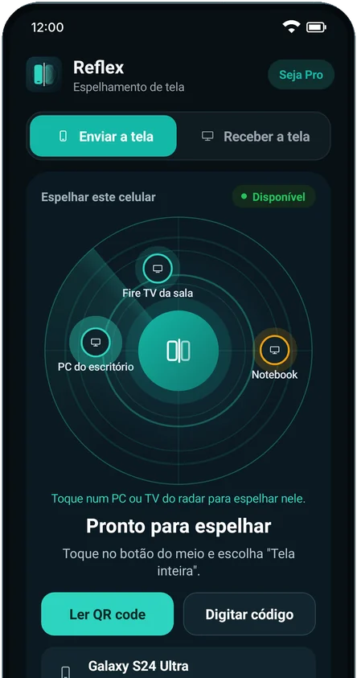
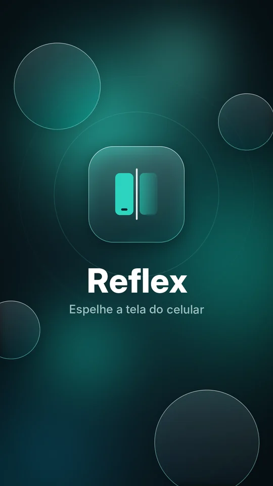
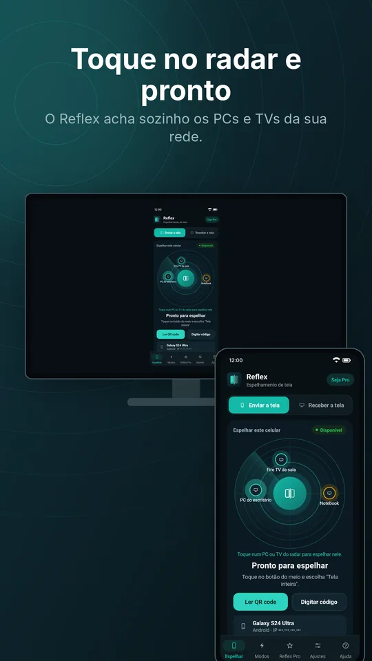
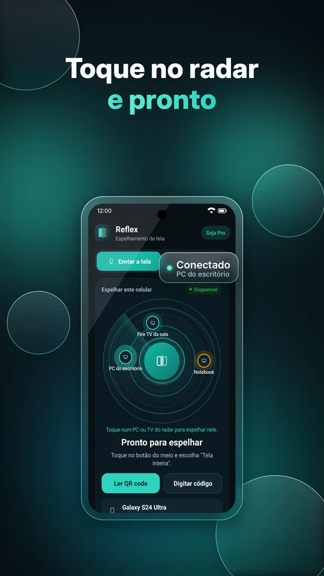
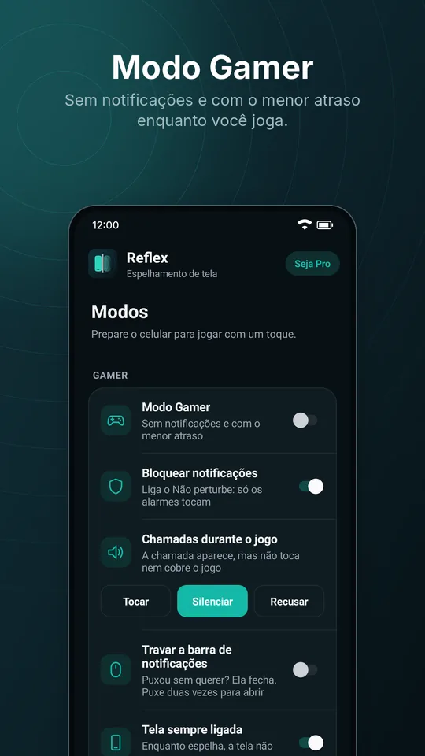
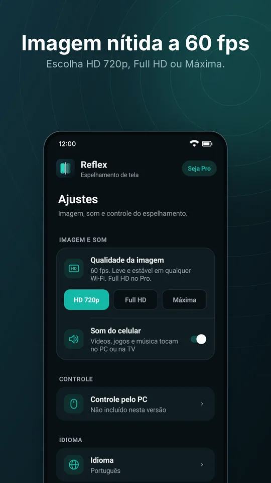
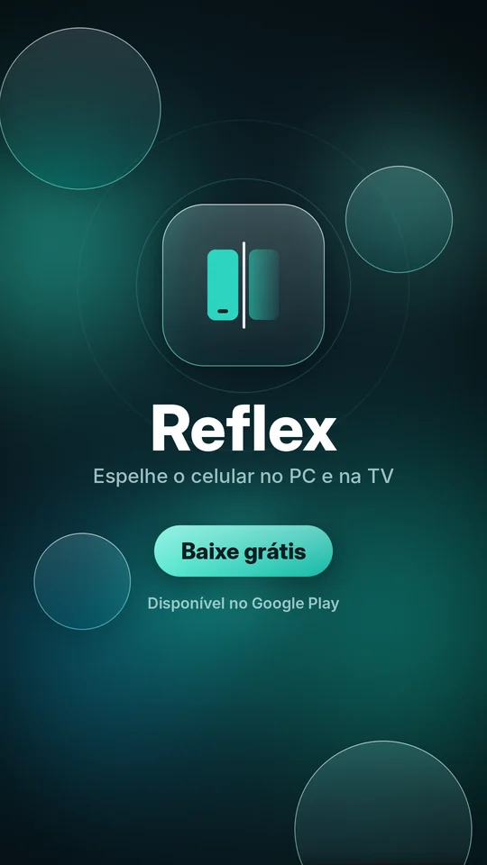

Celular Android
O app que envia a tela. Também recebe a tela do PC.
Versão 1.15.4
Google Play Baixar o APKO APK do site inclui o controle do celular pelo mouse e teclado do PC.
Grátis · sem anúncios · sem cabo
Imagem e som do seu Android no computador e na televisão, pelo Wi-Fi. Abra o Reflex nos dois aparelhos, toque no radar e pronto.
Celular com Android 10 ou mais novo · PC com Windows 10 ou 11 (64 bits) · Fire TV e Android TV

Instale no celular e no aparelho onde você quer ver a tela. Os links sempre baixam a versão mais nova, e depois o Reflex se atualiza sozinho.
O app que envia a tela. Também recebe a tela do PC.
Versão 1.15.4
Google Play Baixar o APKO APK do site inclui o controle do celular pelo mouse e teclado do PC.
Recebe a tela do celular, grava, controla jogos e transmite o PC para o celular.
Versão 1.15.0
Baixar Reflex-Setup.exeInstala sem senha de administrador.
Veja o celular na televisão. Funciona no Fire TV Stick e nas TVs com Android.
Versão 1.10.1
Baixar Reflex-TV.apkNa TV, digite is.gd/reflextv no app Downloader.
Feito para ser simples: sem conta, sem cabo e sem configurar nada.
O celular encontra sozinho os PCs e TVs da sua rede. Também dá para conectar pelo QR code ou por um código.
Vídeos, jogos e música tocam no PC ou na TV com o som do celular, a até 60 fps.
Use o mouse e o teclado do computador para mexer no celular. Disponível no APK do site.
No PC, clique em Transmitir este PC e veja o computador na tela do celular.
Grave em vídeo MP4 o que aparece do celular, direto no PC. Atalho Ctrl+R.
Sem notificações, chamadas silenciadas, o menor atraso e teclas do PC mapeadas na tela do jogo.
Mostre o celular em mais de um PC ou TV ao mesmo tempo.
A imagem vai direto do celular para o PC dentro do seu Wi-Fi. Nada passa por servidores e nada é gravado fora dos seus aparelhos.






Baixe o Reflex no celular e no PC ou na TV. Na primeira vez no PC, permita o Reflex em Redes privadas quando o Windows perguntar.
Deixe o celular e o PC (ou a TV) na mesma rede Wi-Fi e abra o Reflex nos dois.
No celular, toque no PC ou na TV que aparece no radar e aceite o aviso do Android. A tela aparece na hora.
O plano grátis já faz tudo, sem anúncios. O Reflex Pro deixa a imagem mais nítida.
R$ 0 para sempre
7 dias grátis para testar
R$ 9,90 por mês, ou R$ 80 por ano
A assinatura é feita no app do celular, na aba Pro, pelo Google Play. Preços no Brasil.
Sim. O plano grátis espelha em HD 720p, com som, sem anúncios e sem limite de tempo. O Reflex Pro é opcional e libera Full HD e a qualidade Máxima, com 7 dias grátis para testar.
Não precisa de cabo. O celular e o PC (ou a TV) só precisam estar no mesmo Wi-Fi. A imagem vai direto de um aparelho para o outro, sem passar pela internet.
Sim. Esse aviso aparece para programas novos que ainda não têm muitos downloads. Clique em Mais informações e depois em Executar assim mesmo.
Confira se os dois estão no mesmo Wi-Fi (redes de convidados costumam bloquear). No PC, permita o Reflex em Redes privadas no Firewall do Windows. Se ainda assim não aparecer, use Ler QR code ou Digitar código no celular.
A versão da Google Play se atualiza pela loja. O APK do site inclui o controle do celular pelo mouse e teclado do PC e se atualiza sozinho. Não dá para ter os dois ao mesmo tempo: desinstale um antes de instalar o outro. Para assinar o Pro, use a versão da Google Play.
Celulares com Android 10 ou mais novo, PCs com Windows 10 ou 11 de 64 bits, Fire TV Stick e TVs com Android TV.
Não. Nada da sua tela é enviado para a internet, para nós ou para terceiros. Veja a Política de Privacidade.